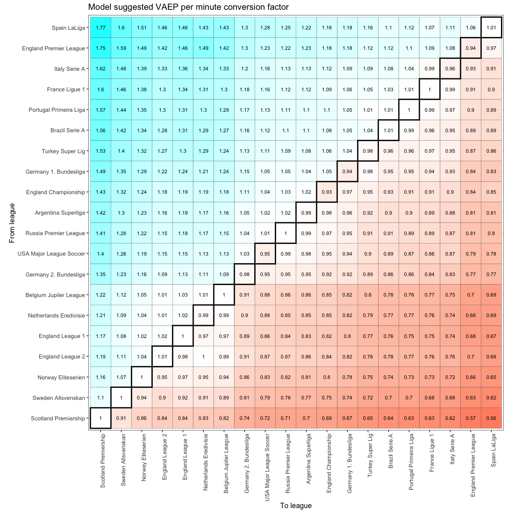

Expanding on the Relative Intractability of Interleague Performance Projections
Published on November 28, 2023
A running theme throughout all the various soccer-related posts on this site is my rant on the foibles of predicting the performance of interleague transfers. (Interleague transfers are, simply, where the buying and selling teams play in different leagues.) I usually gloss over explaining why it is so in those rants, primarily because it is peripheral to the narrative in consideration but also because the details are tedious and deserving of their own post. (I’m also not willing to squander a perfectly good post in the footnotes of another just yet.)
Firstly, I should take some time to clarify and expand upon the point of contention. Different soccer leagues differ markedly across multiple vectors, most notably the playing styles of the teams that constitute them and the quality and age curves of the players that make up the teams. These are the differences that separate (say) the Premier League from (again, without loss of generality) the Eredivisie or, for that matter, the Premier League 2. Player performance in one league is not entirely replicable in the other for the same reasons as mentioned above, and in the same way player performance in the FBS isn’t replicable in the NFL. Explicitly or implicitly resolving this dilemma is paramount to the $x0 million considerations that are transfers, most of which clubs must get right to maintain (and improve) competitiveness.
Projecting the performance of interleague transfers is a somewhat crucial consideration for betting companies too, as pricing the impact of transfers fairly accurately is important at varying degrees for most props on offer. However, they have ways of mitigating and porting risk that is not true in the case of clubs, whose decisions can’t quite be hedged and where feedback loops are intensely sharp and quick. (This essay will only explore interleague transfers from the perspective of clubs.)
In practice, not all interleague transfers carry with them exceptional uncertainty. Some leagues have enough cross-pollination between them, with players moving across the aisle and/or the constituent teams playing between each other often enough that it isn’t too hard to gauge, with varying degrees of confidence, the change in a player’s output.
For instance, transfers between players in the top five male leagues (across all directions) happen often enough that it’s trivial for clubs in each of those leagues to spot the best performers in the other four and apply some constant to predict future output in an ideal scenario. Some methodologies that attempt to determine those transformation constants are linked here and here.
There are some caveats:
- A player’s output in a new team depends, to a great extent, on how good the buying team is and how stable the organization is. Liverpool can rely on model outputs more than, say, Manchester United can, and most randomly chosen players will have greater success at Liverpool than at Manchester United, were they to have a choice between the clubs. The reason is partly simple: Liverpool has better players and is a better-coached team, which helps the new signing perform better. But there are also some less obvious reasons: better organizations help players relocate better, which is known to improve transfer outcomes. They are also more likely to sign players that fit the manager’s system and probably have fallback protocols that prevent transfers from going messy.[1]
- The historic samples whose NPV/VAEP scores are post hoc analyzed to yield the transformation constant are not truly randomly chosen. The best players from leagues of perceived lower quality are overwhelmingly more likely to move to the better teams and leagues, and the constants are representative of their performances. Clubs, as such, must exercise caution against updating uniformly across all players in any given competition.
- This follows from the above, but players whose performances stand out very obviously and who are from leagues whose quality is well-understood are almost always valued very accurately, which puts those players out of reach for clubs with smaller budgets looking to improve relative competitiveness. Those clubs’ search processes then expand outward into leagues whose quality is more uncertain, and into players whose performances are not entirely striking from the numbers. This, naturally, decreases success rates for the group.[2]
Attempts to address these drawbacks, especially the projection issues related to the first point, have involved using Elo ratings to more accurately reflect the impact of team quality on performance. While certainly an improvement, they run into some well-known issues that deal with the inherent nature of Elo as an accurate representation of relative team quality. For one, there are usually only three major competitive fixtures between teams from different continents in an entire calendar year, which makes those intercontinental differences very hard to quantify. The same issue exists, although less pertinent, between leagues from the same continent whose teams don’t play each other often. Rapid shifts in club performances over extremely short periods – which happens more often than you might think – can also cause projection errors.[3] While self-correcting over enough time, it might not correct in time for transfers where evaluation timelines are short.
To conclude, I’ll reiterate that projection is puzzling, which makes interleague transfers, by association, onerous. The most fiscally dominant clubs can pay for the best players with the most striking performance numbers in similar leagues and can be confident in their projections. For others, the confidence level should trend lower with obscurity. Proceed with caution.
Footnotes:
-
Note that we are talking about randomly selected players here. The fact is Liverpool, in recent years, has been much better at scouting and talent identification than Manchester United. United, though, still overpay for good (and ‘proven’) players — who still don’t perform all that great, which is a product of all the other factors they aren’t good at.
Ian Graham, the former Liverpool FC Director of Research, had a neat heuristic that listed the six ways a transfer can go wrong:
- The player isn’t good enough,
- Has pertinent injury/personal issues,
- The manager doesn’t like the player,
- Played out of position,
- A player on the current roster is better,
- Doesn’t fit the system.
Only the first relates entirely to scouting. Preventing the other causes, at least partly, depends on having a highly functional organization.
- Individual clubs can still be successful here, but for a group of players, the more uncertain the value, the greater the risk of failure — when compared to groups that can be projected confidently. I should probably write about how clubs can find deep value in the market. Right now, there are probably still very potent signings that a teetering Premier League team can make that involve little projection risk. That deserves an article of its own.
-
This footnote was added as an edit. Here's a funny anecdote from Ted Knutson, CEO of Statsbomb, at SSAC 2019 explaining a weird quirk of scouting forwards from the Eredivisie: “When guys perform well [in the Eredivisie], you really have to be careful about their age. A lot of them are playing against 18-22 year old centre backs, and they’re cutting through them partly because of their physical maturity, and much less so because of their ability. You put them in a league that’s physically stronger and has a more normal peak age curve and they flop. We see this again and again.”
Presumably, this is a common occurrence with the Eredivisie, and if so, it should be reflected in both the league’s and its teams’ Elos and the output of the players transferring out. You can, however, imagine a whole bunch of leagues and (unlucky) evaluation timelines where this isn’t the case.